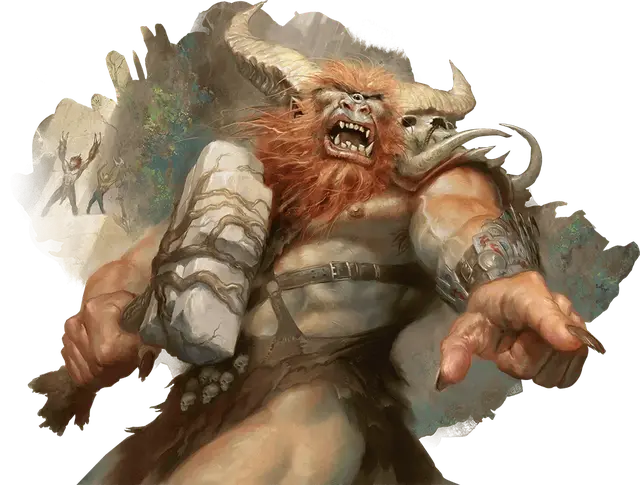

Борборигмос
Borborygmos
Огромный Великан, нейтральный, именной НИП

Класс Доспеха 14 (природный доспех)
Хиты 270 (20к12 + 140)
Скорость 40 футов
| мод | спас | ||
|---|---|---|---|
| СИЛ | 24 | +7 | +13 |
| ЛОВ | 11 | +0 | +0 |
| ТЕЛ | 24 | +7 | +13 |
| мод | спас | ||
|---|---|---|---|
| ИНТ | 8 | −1 | −1 |
| МДР | 17 | +3 | +9 |
| ХАР | 16 | +3 | +3 |
Навыки Атлетика +13, Выживание +9, Проницательность +9
Сопротивление урону психическая энергия, яд
Иммунитет к состояниям испуг, очарование
Чувства пассивное Восприятие 13, чувство вибрации 60 футов
Языки Общий, Великаний
Опасность 18 (20000 опыта)
Бонус мастерства +6
Особенности
Легендарное сопротивление (3/день). Если Борборигмос проваливает спасбросок, вместо этого он может сделать спасбросок успешным.
Плохое восприятие глубины. Борборигмос совершает с помехой любой бросок атаки по цели на расстоянии более 30 футов.
Осадное чудовище. Борборигмос наносит двойной урон объектам и строениям.
ЧЕРТЫ Борборигмоса.
Идеал:. «Мы сражаемся!».
Привязанность:. «Я верну дикие земли».
Слабость:. «Я не должен никого слушать».
Действия
Мультиатака. Борборигмос может использовать свое Пугающее присутствие. Он также совершает две атаки: одну Молотом и одну Затаптыванием.
Молот. . Рукопашная атака оружием: +13 к попаданию, досягаемость 10 фт., одна цель. Попадание: 28 (6к6 + 7) дробящего урона. Если цель — существо, она должна преуспеть в спасброске Силы Сл 21, иначе будет сбита с ног.
Затаптывание. . Рукопашная атака оружием: +13 к попаданию, досягаемость 5 фт., одна цель. Попадание: 18 (2к10 + 7) дробящего урона.
Камень. . Дальнобойная атака оружием: +13 к попаданию, дистанция 30/120 фт., одна цель. Попадание: 29 (4к10 + 7) дробящего урона.
Пугающее присутствие. Каждое существо по выбору Борборигмоса, которое находится в пределах 60 футов от него и может видеть или слышать его, должно преуспеть в спасброске Мудрости Сл 17, иначе оно будет испугано на 1 минуту. Испуганное существо может повторять спасбросок в конце каждого своего хода, оканчивая эффект на себе в случае успеха. Если спасбросок существа успешен или эффект для него закончился, существо становится невосприимчивым к Пугающему присутствию Борборигмоса на следующие 24 часа.
Легендарные действия
Борборигмос может совершить 3 легендарных действия, выбирая из представленных ниже вариантов. За один раз можно использовать только одно легендарное действие, и только в конце хода другого существа. Борборигмос восстанавливает использованные легендарные действия в начале своего хода.
Атака. Борборигмос совершает атаку оружием.
Рёв (стоит 2 действия). Борборигмос угрожающе кричит на одно существо, которое видит в пределах 60 футов от себя. Это существо должно преуспеть в спасброске Мудрости Сл 17, иначе будет испугано на 1 минуту. Если существо уже испугано, вместо этого оно становится ошеломленным. Существо может повторять спасбросок в конце каждого своего хода, оканчивая эффект на себе в случае успеха. Если спасбросок существа успешен или эффект для него закончился, существо становится невосприимчивым к Реву Борборигмоса на следующие 24 часа.
Широкоплечий (стоит 3 действия). Борборигмос движется со скоростью, равной половине его скорости, и может перемещаться в пространстве любого существа меньше Огромного. В первый раз, когда Борборигмос входит в пространство существа во время этого движения, существо должно совершить спасбросок Ловкости Сл 21. Если спасбросок успешен, существо отталкивается от Борборигмоса на 5 футов. Если спасбросок провален, это существо падает ничком, и Борборигмос может атаковать его Затаптыванием.
Описание
На протяжении десятилетий огромный циклоп Борборигмос пользовался уважением и повиновением кланов Груулов, побеждая всех, кто бросал ему вызов. Он воплощает бушующий огонь, который, как верят груулы, горит в их животах, и его гнев на цивилизацию Равники не знает границ.
Сильнейший из могучих. Борборигмос возглавляет клан Пылающего Дерева, который является самым большим и разнообразным из кланов Груулов. Его почти всегда сопровождают другие члены его клана — не потому, что он нуждается в их защите, а потому, что они могут нуждаться в его защите. Среди его компаньонов есть самые разные существа, от здоровенных гигантов до съежившихся гоблинов.
Груулы следуют силе, и Борборигмос удерживает свои позиции только потому, что он оказался сильнее любого соперника.